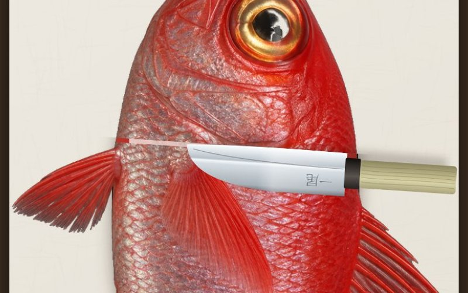

一尾入魂 SABAKI魚さばき
指で鱗を取り、頭を落とし、三枚におろして刺身を引く。最後は盛り付けて親方の鑑定。
遊ぶ
HADAL BLUE深海ダイブ
ダイバーになって深海の海溝へ。ライトに浮かぶ深海魚、沈んだ潜水艦と貨物船。
潜る
VOID SHIFTFPS
夜の地下駐車場でボットと撃ち合う。拳銃・ライフル・ショットガン。ファイルは十数KB。
撃つインストールなし。開いたらすぐ遊べるブラウザゲーム。

指で鱗を取り、頭を落とし、三枚におろして刺身を引く。最後は盛り付けて親方の鑑定。
遊ぶ
ダイバーになって深海の海溝へ。ライトに浮かぶ深海魚、沈んだ潜水艦と貨物船。
潜る
夜の地下駐車場でボットと撃ち合う。拳銃・ライフル・ショットガン。ファイルは十数KB。
撃つ